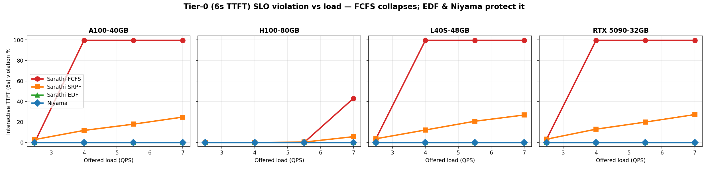
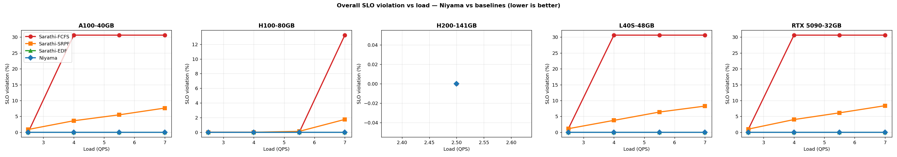
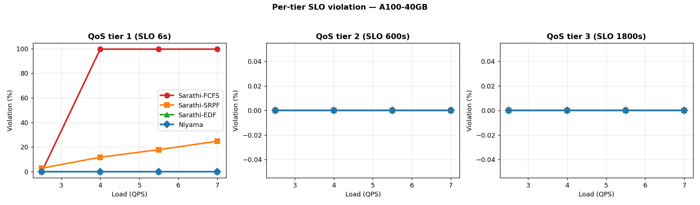

Reproducing the deadline-aware QoS scheduler of Niyama (ASPLOS 2026) on five GPUs and verifying its central claim.
Niyama co-schedules interactive and batch requests on a shared fleet with per-request deadlines instead of siloed pools.
We reproduce the artifact and re-run the Figure 10/11 experiment across five GPUs, including a Blackwell RTX 5090.
At a given load, the deadline scheduler keeps more requests within their SLO than the baselines, and the gap widens near/above capacity.
Niyama is a Sarathi-Serve scheduler built on chunked prefill plus four QoS-aware mechanisms.
Three tiers with deadlines [6s, 600s, 1800s]; TTLT tiers back-solve an effective TTFT deadline from predicted decode length.
A sequence comparator provides four selectable orderings — the baselines and Niyama itself:
| Scheduler | Sort key (lowest first) |
|---|---|
fcfs (baseline) | arrival_time |
srpf (baseline) | remaining prompt tokens |
edf (baseline) | arrival_time + ttft_deadline |
| deadline (Niyama) | arrival + ttft_deadline + λ·(remaining_tokens), relegated last |
λ blends EDF with a length penalty, capturing SRPF's throughput benefit without abandoning deadlines.
Each step admits decodes first (least-slack-first), then spends the remaining token budget on prefill chunks.
Each iteration, a learned latency model + binary search pick the largest prefill chunk that fits inside the batch's minimum decode slack.
Pending prefills predicted to miss their deadline are eagerly relegated behind still-savable requests — graceful degradation, not cascading violations.
Single-GPU (TP1) sweep run independently on five GPUs — a 4-way PACE fan-out plus a local Blackwell card.
| GPU | VRAM | Arch (SM) | Site | Software stack |
|---|---|---|---|---|
| NVIDIA H100 | 80 GB | Hopper (sm_90) | PACE | torch 2.3.0+cu121 · flashinfer 0.1.1 (prebuilt) · Python 3.10 |
| NVIDIA H200 | 141 GB | Hopper (sm_90) | PACE | |
| NVIDIA A100 | 40 GB | Ampere (sm_80) | PACE | |
| NVIDIA L40S | 48 GB | Ada (sm_89) | PACE | |
| NVIDIA RTX 5090 | 32 GB | Blackwell (sm_120) | Lab | torch 2.7.0+cu128 · flashinfer 0.2.5 (JIT) · ported wrapper |
| Parameter | Value |
|---|---|
| Model | Llama-3-8B, TP1, load_format=DUMMY (random weights; ungated mirror) |
| Workload | Azure LLM Inference Trace — Code (1 week); Poisson arrivals |
| Request lengths | from trace (mean ≈2.5k prefill / 23 decode) |
| QoS tiers / SLO | 3 tiers — 6 s (TTFT) / 600 s / 1800 s (TTLT) |
| Schedulers | fcfs, srpf, edf, deadline (Niyama) |
| Load sweep (QPS) | 2.5, 4.0, 5.5, 7.0 |
| Requests / run | 800 · max_model_len 16384 · base chunk 256 |
16 runs/GPU × 5 GPUs = 80 runs — a scaled replica of the paper's Fig 10/11; the scheduler ordering is what is tested.
FCFS violates the 6s interactive SLO for ≈99.6% of tier-0 requests under load; SRPF degrades to ≈27%; EDF and Niyama hold 0% across the whole range.

Interactive-tier (6 s TTFT) violation rate (%) by GPU, scheduler and load. Lower is better.
| GPU | Scheduler | QPS 2.5 | QPS 4.0 | QPS 5.5 | QPS 7.0 |
|---|---|---|---|---|---|
| A100-40GB | FCFS | 0.0 | 99.6 | 99.6 | 99.6 |
| SRPF | 2.8 | 11.8 | 17.9 | 24.8 | |
| EDF | 0.0 | 0.0 | 0.0 | 0.0 | |
| Niyama | 0.0 | 0.0 | 0.0 | 0.0 | |
| H100-80GB | FCFS | 0.0 | 0.0 | 0.0 | 43.1 |
| SRPF | 0.0 | 0.0 | 0.4 | 5.7 | |
| EDF | 0.0 | 0.0 | 0.0 | 0.0 | |
| Niyama | 0.0 | 0.0 | 0.0 | 0.0 | |
| L40S-48GB | FCFS | 3.7 | 99.6 | 99.6 | 99.6 |
| SRPF | 3.7 | 12.2 | 20.7 | 26.8 | |
| EDF | 0.0 | 0.0 | 0.0 | 0.0 | |
| Niyama | 0.0 | 0.0 | 0.0 | 0.0 | |
| RTX 5090-32GB (Blackwell) | FCFS | 3.3 | 99.6 | 99.6 | 99.6 |
| SRPF | 3.3 | 13.0 | 19.9 | 27.2 | |
| EDF | 0.0 | 0.0 | 0.0 | 0.0 | |
| Niyama | 0.0 | 0.0 | 0.0 | 0.0 |
Tiers 1/2 (600s/1800s) saw 0% violations everywhere — short runs never threaten the batch budgets, so the contest is entirely on the interactive tier. H200 omitted (§4.3).
FCFS has a cliff (head-of-line blocking); SRPF turns it into a slope but is deadline-blind and can starve long prefills; deadline-aware schedulers flatten it to zero.


Capacity scales with the GPU: A100/L40S/5090 saturate by QPS 4, the H100 not until QPS 7. The ported Blackwell 5090 reproduces the A100/L40S behaviour faithfully.
On Niyama-vs-EDF our scaled setup is inconclusive — both tie at 0%. This is consistent with the paper: in an interactive-dominated 800-request setup deadlines alone suffice, so EDF already hits the ceiling. Niyama's edge needs heavy multi-tier TTLT pressure, which larger sweeps exercise.
The 2024-era stack needed four fixes to run on Blackwell and on SLURM.
flashinfer 0.1.1 lacks sm_120; moved to torch 2.7 + flashinfer 0.2.5 (JIT) and rebuilt kernels for arch 12.0.
Ported the attention wrapper to flashinfer ≥0.2's batch_indices/positions API; a 1-token boundary mismatch is padded (harmless under dummy weights).
Ray 2.55's bare ray.init() saw 0 GPUs; fixed by passing num_gpus explicitly.
Post-run plotly/kaleido launches headless Chromium and hangs; we watch for the CSV then stop gracefully (never -9 on CUDA).
# 1. environment (PACE / Hopper / Ampere / Ada)
conda create -n niyama python=3.10 -y && conda activate niyama
pip install torch==2.3.0 --index-url https://download.pytorch.org/whl/cu121
pip install https://github.com/flashinfer-ai/flashinfer/releases/download/v0.1.1/\
flashinfer-0.1.1+cu121torch2.3-cp310-cp310-linux_x86_64.whl
TORCH_CUDA_ARCH_LIST="8.0;8.6;8.9;9.0" pip install -e . --no-build-isolation --no-deps
# 2. trace
wget -O data/processed_traces/AzureLLMInferenceTrace_code_1week.csv \
https://azurepublicdatasettraces.blob.core.windows.net/azurellminfererencetrace/AzureLLMInferenceTrace_code_1week.csv
# 3. one scheduler point (deadline = Niyama; swap for fcfs/srpf/edf)
python -m sarathi.benchmark.main --scheduler_config_type DEADLINE \
--deadline_scheduler_config_scheduler_type deadline \
--poisson_request_interval_generator_config_qps 5.5 \
--synthetic_request_generator_config_num_requests 800 \
--model_config_model NousResearch/Meta-Llama-3-8B --model_config_load_format DUMMY \
--worker_config_attention_backend FLASHINFER --model_config_max_model_len 16384 \
--length_generator_config_type TRACE --output_dir out/
# metric source: out/**/sequence_metrics.csv (request_tier, prefill_e2e_time, request_e2e_time)On Blackwell, use torch 2.7+cu128 / flashinfer 0.2.5 / arch 12.0 and the wrapper port above.